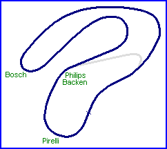
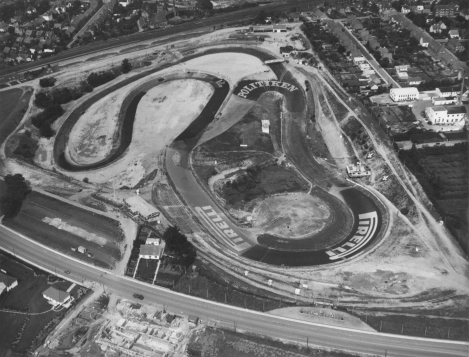

| Roskilde Ring Type: Banked
Permanent Road Course |
 |
This circuit opened in 1955 as a 670 metre circuit, which then was extended to 1400 metres in the summer of 1957. The "old" circuit was still used for a couple of years (last year must have been 1958), and the tarmac of that circuit was kept intact until the circuit held its last meeting in the autumn of 1968. The direction was anticlockwise.
Advertising was painted directly onto the asphalt of the banked turns, which proved to be hazardous in the wet. The aerial photograph below was shot just weeks before the extended circuit opened in August 1957.
From 1960 to 1962 the circuit hosted the non-championship Danish Grand Prix, with the races been spilt into heats. Sports car races where also held, the most promenant being the "Copenhagen Cup". The overall lap record was set on September 22nd 1968 by Reine Wisell, who took his Tecno F3 round the circuit in 42.0s.
The circuit closed at the end of 1968 when the local council elected not to renew the organisers lease. The circuit's actual location was very close to the centre of the town of Roskilde, which is situated about 25 miles west of Copenhagen. Today, the area is partly used for a park, partly for a Scandic Hotel.
Further photographs of the circuit during it's period of operation can be found here: http://www.cray.dk/v3/pv.phtml?group=526

Click photograph to open a Hi-Resolution image [526KB - 1874x1428]
Return to racingcircuits.net's Historic Circuits Photo Archive Main Index
Information kindly supplied by Morton Alstrup. Photograph from the archives of Dansk Veteranbil Klub.
)window.location='../../../../homepage.ntlworld.com/daniel.e.king/roskilde.jpg'){kind=link}